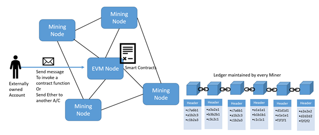
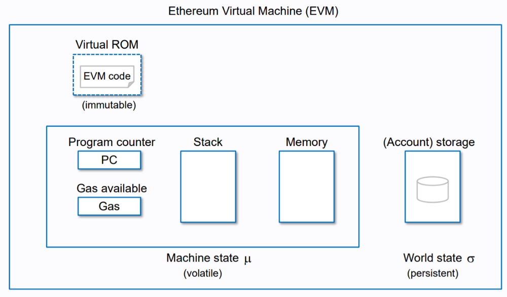

Ethereum Nodes
They are the peer-to-peer machines that link to form an Ethereum network. Nodes communicate with one another in order to validate transactions and record data about the status of the blockchain. On the Ethereum network, these computers or servers are responsible for storing, validating, and trading data. Each node keeps its own copy of the blockchain and strives to verify that it matches the copies of all the other nodes. A new block is added based on whether or not the majority of nodes accept it.
Transactions
In Ethereum, performing a function that modifies the state of a contract is considered as a transaction.
The three different kinds of transactions that can be carried out in Ethereum are as follows:
- Transferring ether between accounts: The accounts can be contract accounts or externally owned account.
- Smart contract deployment: Using EVM, an externally own account can deploy a contract.
- In working or using a function of a contract : In Ethereum,a function that modifies the state of a contract is considered as a transaction.
Characteristics of a transaction:
- From: The account that is initiating the transaction is identified by the "from" account attribute, which represents an account that is prepared to send some gas or ether. The account may be contract-owned or externally owned.
- To: An account that is receiving ether or benefits instead of an exchange is referred to by the "to" account property. The field is blank for transactions involving the contract's deployment. It can be a contract account or something else entirely.
- Value: The amount of Ether that is moved from one account to another is described by the "value" account property.
- Input: The "input" account property refers to the compiled contract bytecode. It is used to store information about function calls to smart contracts and their associated parameters.
- BlockHash: The hash of the block to which this transaction belongs.
- BlockNumber: The block to which this transaction belongs is identified by the "blockNumber" account property.
- Gas: The amount of "gas" delivered by the sender who is carrying out this transaction is referred to as the gas account property.
- GasPrice: The sender's willingness to pay the price per gas in wei is indicated by the "gasPrice" account property.
- Transaction Index: The serial number of the most recent transaction in the block .
- Value: The quantity of Ether transferred in wei is the "value" account feature.
Ethereum Virtual Machine
Ethereum is technically a globally decentralized general-purpose computer. It manages the deployment and execution of smart contracts. It is not only sandboxed but actually completely isolated, which means that code running inside the EVM has no access to network, filesystem or other processes. The Ethereum Virtual Machine’s instruction set is Turing-complete, allowing contracts deployed on the network to perform any task a regular computer program can do. However, this ability comes with a crucial caveat – some programs could take forever to execute. This results into ‘the halting problem’ and puts the Ethereum network at risk of running a never-ending program. A program like this would completely stall the network, but luckily Ethereum has a clever way of dealing with this issue.
Using a concept known as ‘gas,’ the network demands a fee for its computation costs. After a certain maximum computation has been performed, the execution ends after the gas fueling the transaction is depleted, and the EVM halts the program. This means that the EVM is only a quasi-Turing complete machine – it runs any program you throw at it, but only if the program ends after using a certain amount of computational power.
Decentralized Applications (DApps)
Dapps are effectively smart contracts that also have a frontend user interface, making them similar in function to traditional applications. They offer a more comprehensive viewpoint than smart-contracts. Dapps are based on open, decentralized, peer-to-peer infrastructure services in a border sense.
Architecture of Dapps is composed of :
- Frontend
- Backend - smart contract on blockchain
Additional decentralized elements :
- Messaging protocol and platform (Whisper) : Whisper lets nodes in the network communicate with each other.
- Storage protocol and platform (Swarm) : Swarm allows DApps to efficiently share the storage and bandwidth resources of their data in order to provide the necessary services to end users.